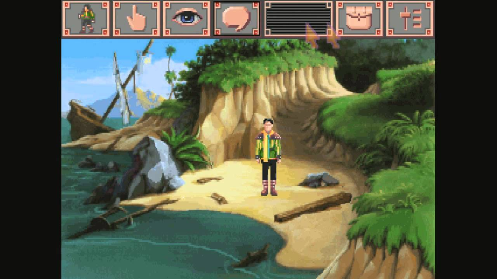
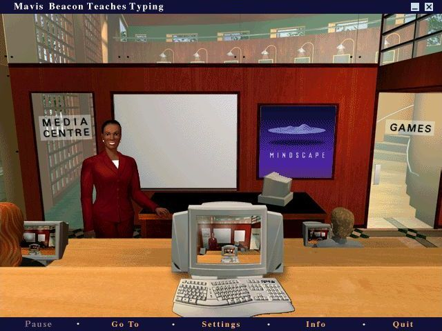

I grew up on a native American reservation in northern California, in an isolated mountain household with extremely limited access to technology. In fact, my family didn't even have a phone!

The first computer that I had access to could do two things; it could run MS Word (1.0?) and it could play King's Quest VI: Heir Today Gone Tomorrow. This programs had to be started using a command-line interface.
Early Education
In grade school we were sometimes taken to a dim little computer lab where they attempted to teach us how to touch-type.

We also recieved instruction on how to query Google back when it was a weird new technology.
College
About 5/6 of the way through my bachelor's I came across a particular YouTube series while studying for an exam.
Crash Course Computer Science
I started to consider a computer science degree, but I was already close to finishing my BS in biology. Meanwhile, I had heard about LaunchCode, and it seemed like I was encountering more and more people who had either been through the program themselves or had successfully taught themselves to code. So I decided to apply, and here I am.